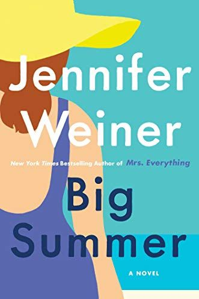
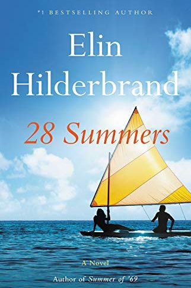
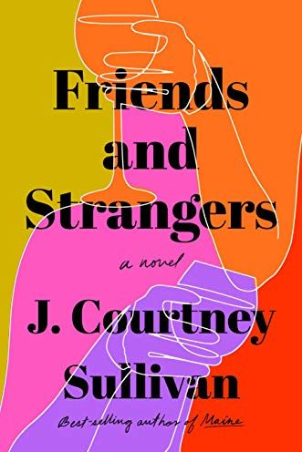
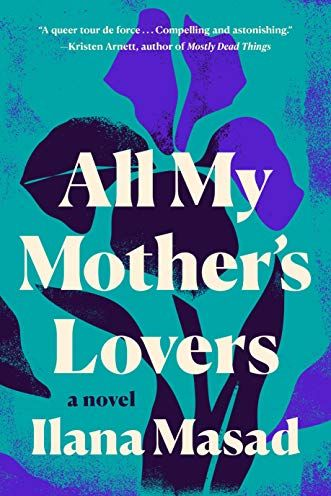

Best Beach Reads to Your Summer Reading List
By: Deshan Vimukthi
1..Big Summer: A Novel
Author: JENNIFER WEINER

From the author of Mrs. Everything comes this beach-ready peek into female friendship, romance, and some stunning beachside mansions.
Daphne has finally escaped the toxic clutches of Drue Cavanaugh and come into her own as a plus-sized influencer when Drue begs her to be in her wedding on Cape Cod.
Daphne agrees, but soon finds herself involved in a scandal nobody expected.
2..Rodham: A Novel
Author: CURTIS SITTENFELD

In our reality, Hillary Rodham met Bill Clinton as a law student at Yale, and married him after repeatedly refusing his proposals, eventually following him to the White House.
But what if she didn't? In this gripping tale that interweaves real history with the imagined, we see an alternate future for Hillary – one both with and without Bill. A lot of the characters are familiar, but the paths they follow couldn't be more different.
3..28 Summers
Author: ELIN HILDERBRAND

Elin Hilderbrand is the godmother of beach reads for a reason: Her books always take readers away on a mental vacation.
This year’s release follows Link as he fulfills his mother Mallory’s dying wish to call the numbers he found in her desk drawer. To his surprise, one of them is Jake, a presidential candidate’s husband.
He soon finds out that Jake and Mallory had a lasting bond, the kind of easy affair that can only happen at a summer cottage.
4..All My Mother's Lovers
Author: ILANA MASAD

After almost two decades in New York City, Elisabeth is trying to adjust to her new, small-town life, not to mention new motherhood.
She hires college student Sam to help care for the baby, and they soon bond over their busy lives and uncertain futures.
But when Elisabeth learns Sam has something surprising in common with her her father-in-law, it exposes the cracks between the two women, and how deep their differences go.
5..Friends and Strangers
Author: J. COURTNEY SULLIVAN

After Maggie's mom dies unexpectedly, she returns home to help with arrangements, and discovers five letters her mom left behind, all addressed to strange men. She sets off to find them and along the way, learns more about her parents' love life than she bargained for.
Come for the tear-jerking family scenes, stay for the twist all the way at the end.